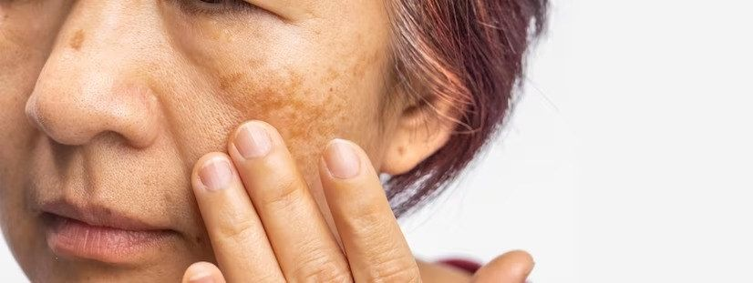

O melasma é uma doença causada pelo aparecimento de manchas na pele. Geralmente, essas manchas são no tom amarronzado e surgem na região da bochecha e do nariz, embora também possa aparecer no rosto inteiro e em algumas áreas do corpo, como braços e tronco.
Tratá-lo pode ser um desafio para quem o possui, mas não é impossível. Por isso, é importante procurar um dermatologista que avalie seu caso e recomende o melhor tratamento de acordo com sua necessidade.
Causas do melasma
O melasma tem uma relação muito forte com fatores hormonais. Assim, mulheres após a gestação podem apresentar o surgimento ou a piora da mancha
Além disso, o melasma pode ser causado por fotoenvelhecimento. Ou seja, tomar sol em excesso pode ser fator agravante para o surgimento das manchas.
Por último, os fatores genéticos são de forte influência no aparecimento do melasma no rosto, principalmente se passado de mãe para filha, já que a doença é mais comum em mulheres.
Sendo assim, os principais fatores para aparecimento do melasma são:
● Fatores hormonais, como gravidez
● Sol em excesso em algum momento da vida
● Fatores genéticos
Tratamentos para o melasma
Existem vários tratamentos possíveis para o melasma. O principal é o protetor solar, sobretudo quando é adicionada uma camada extra de proteção, seja passando uma segunda dose de protetor ou com uma barreira física, como a maquiagem. Dessa forma, o revestimento na pele faz com que os raios ultravioletas não piorem a mancha.
Outro fator importante é ter atenção à quantidade de protetor solar. O ideal é que, para o rosto, pescoço e cabeça seja aplicada uma colher de chá. Já para o corpo, a dosagem correta é uma colher de chá para a parte da frente e outra para a de trás. Por fim, braços e pernas precisam ter uma colher de chá cada.
Além disso, é preciso ficar atento: o protetor deve ser reaplicado a cada 3 horas. Se você for se expor ao sol durante mais tempo, outras barreiras podem ser usadas, como chapéus e guarda-sol.
Para além do protetor solar, existe o tratamento com clareadores. Existem muitos disponíveis no mercado, um dos mais conhecidos é a hidroquinona. Porém, é importante levar em consideração que todo medicamento tem seus riscos. Sendo assim, o uso prolongado ou de forma inadvertida da substância pode ser mais prejudicial do que benéfico.
Por isso, o uso de clareadores deve ser sob recomendação e supervisão médica.
Já peelings e os lasers podem ser outras alternativas mais seguras para o tratamento do melasma, visto que se trata de uma doença crônica e sem cura. Ou seja, pode ser controlada quando tratada da forma correta.
Laser pode piorar o melasma?
Uma dúvida muito comum é sobre se o laser pode piorar o melasma. Se for feito de forma errada e sem recomendação médica, o laser pode agravar as manchas. Porém, quando feito de forma correta, o procedimento é um grande aliado.
Se você tem alguma dúvida, procure o seu médico dermatologista ou entre em contato conosco.